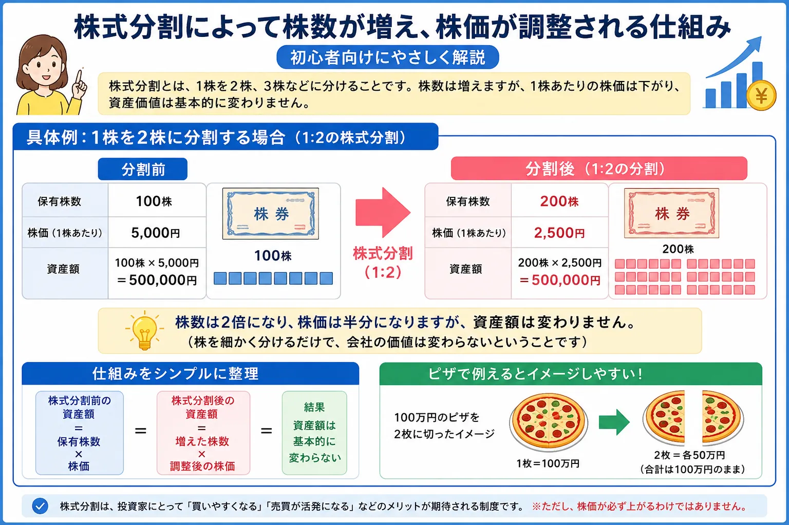

話題・トレンド
株式分割とは？株価が下がるのになぜ注目されるの？初心者向けに解説
株式分割が発表されると、ニュースでは「株価が下がる」「株数が増える」「買いやすくなる」と説明されます。株価が下がると損をしたように見えますが、分割直後の資産価値がその分だけ減るわけではありません。仕組みと注目される理由を初心者向けに整理します。
Overview
株式分割の仕組みを最初に整理

- 株式分割では、1株を2株・3株などに分けます。
- 分割比率に応じて保有株数が増え、1株あたりの株価は下がります。
- 分割だけで会社全体の価値や保有資産が増減するわけではありません。
- 最低投資金額が下がり、個人投資家が買いやすくなるため注目されます。
Definition
株式分割とは？
株式分割とは、企業がすでに発行している1株を複数の株に分ける手続きです。たとえば「1株を2株に分割する」「1株を3株に分割する」といった形で行われます。
1株を2株に分割
保有株数は2倍になる
100株を保有している場合、1対2の株式分割後は200株になります。株主が手続きする必要はなく、通常は証券口座へ自動的に反映されます。
会社の価値
分割だけでは変わらない
株数が増えても、会社の売上や利益、保有資産が分割によって増えるわけではありません。会社全体を表す株式を、より細かい単位に分けていると考えると分かりやすくなります。
基本イメージ：大きな一つのものを細かく分けても、全体の量そのものは変わりません。
Price Adjustment
株式分割で株価が下がる理由
株式分割後に株価が下がる理由は、会社の価値が急に下がったからではありません。1株が表す会社の持ち分が小さくなるため、分割比率に応じて1株あたりの理論価格が調整されるからです。
100万円のピザを2つに切っただけ
100万円のピザを2つに切ると、1切れあたりの価値は50万円になります。しかし、2切れを合わせたピザ全体の価値は100万円のままです。1対2の株式分割も同じで、株価は半分になりますが、株数は2倍になります。
100株保有
資産100万円
200株保有
資産100万円
注意：上記は分割時点の理論上の例です。実際の株価は分割後も市場の売買によって変動するため、資産価値が将来も同じとは限りません。
Why It Matters
株式分割はなぜニュースで注目されるの？
株式分割だけで企業価値が増えるわけではありません。それでも注目されるのは、投資家が売買しやすい環境へ変わる可能性があるからです。
少ない資金で買いやすくなる
日本株は通常100株単位で取引されるため、株価が高い銘柄では数十万円から数百万円が必要になることがあります。分割後は1株あたりの価格が下がり、最低投資金額も下がります。
参加できる投資家が増える
購入に必要な金額が下がると、これまで資金面で買いにくかった個人投資家も参加しやすくなります。新NISAで個別株を検討する人からも注目される場合があります。
流動性の改善が期待される
売買に参加する人や注文が増えると、取引が成立しやすくなる可能性があります。ただし、分割すれば必ず出来高が増えるとは限りません。
株価指数への影響もある
株価平均型の指数では、株式分割後の株価調整が指数計算に関係します。実際の指数では除数調整などが行われ、分割だけで指数が機械的に急落しないよう設計されています。
Pros & Cons
株式分割のメリットとデメリット
株式分割のメリット
買いやすさと売買環境の改善
- 最低投資金額が下がる
- 個人投資家が参加しやすくなる
- 売買高や流動性の改善が期待される
- 株主数の増加につながる場合がある
株式分割のデメリット・注意点
値動きや期待が大きくなる場合もある
- 企業価値そのものは増えない
- 発表後に期待先行で株価が動く場合がある
- 分割後に材料出尽くしで下落することもある
- 業績が悪ければ買いやすくなっても株価は下がり得る
Market Reaction
株式分割後に株価は必ず上がる？
結論：株式分割後に株価が必ず上がるわけではありません。
買いやすさの改善や株主層の拡大が好材料として受け止められ、発表後に株価が上昇することはあります。しかし、株式分割だけで売上や利益が増えるわけではありません。すでに期待が株価へ織り込まれていれば、分割実施後に利益確定売りが出ることもあります。
上昇材料になりやすいケース
業績が伸びている企業が買いやすさを改善し、新たな投資家の参加が期待される場合です。ただし、上昇を保証するものではありません。
下落することもあるケース
業績悪化、市場全体の下落、期待の織り込み過ぎ、材料出尽くしなどが重なると、分割発表後や実施後でも株価が下がることがあります。
News Checklist
初心者が株式分割ニュースを見るポイント
「株式分割を発表」という見出しだけで判断せず、次の項目を確認しましょう。
01
分割比率
1株が何株になるのかを確認します。1対2なら株数は2倍、理論株価は半分です。1対5なら株数は5倍、理論株価は5分の1です。
02
分割後の最低投資金額
分割後の予想株価に売買単位を掛けると、必要な資金の目安が分かります。単元未満株を利用する場合は取引条件も確認しましょう。
03
権利付最終日・基準日
権利付最終日は、分割の権利を得るために株を保有しておく必要がある最終売買日です。企業の適時開示や証券会社の案内で正確な日付を確認します。
04
企業業績と今後の見通し
分割は株式の単位を変える手続きです。売上高、利益、成長性、財務状況、株価水準など、企業そのものの内容も一緒に確認する必要があります。
- 分割比率と実施日を確認する
- 株価だけでなく保有株数も見る
- 権利付最終日と基準日を混同しない
- 株主優待や配当の条件変更も確認する
- 決算・業績見通しを分割とは別に評価する
Related Articles
関連する基礎知識
株式分割のニュースを理解するには、株価の仕組みや少額投資、売買タイミングの基礎も役立ちます。
FAQ
株式分割に関するよくある質問
株式分割とは何ですか？
1株を2株や3株などに分け、発行済み株式数を増やす手続きです。分割直後は株数が増える一方、1株あたりの株価は分割比率に応じて調整されるため、理論上の資産価値は基本的に変わりません。株式分割で株価が下がると損をしますか？
分割による株価調整だけで損をするわけではありません。株価が半分になる2分割なら保有株数は2倍になるため、分割前後の資産価値は理論上ほぼ同じです。ただし、その後の株価は市場で変動します。株式分割後に株価は必ず上がりますか？
必ず上がるわけではありません。買いやすさや流動性改善への期待が材料になる場合はありますが、企業価値が分割だけで増えるわけではなく、業績や市場環境によって下落することもあります。配当金や株主優待はどうなりますか？
1株あたり配当は分割比率に応じて調整されることが一般的ですが、年間の受取総額が必ず同じになるとは限りません。株主優待の必要株数や内容が変更される場合もあるため、企業の公式発表を確認してください。株式分割の権利付最終日とは何ですか？
株式分割の権利を得るために、その株を保有しておく必要がある最終売買日です。具体的な日付は企業の適時開示や証券会社の案内で確認しましょう。株式分割の発表後は買うべきですか？
株式分割の発表だけを理由に売買を急ぐ必要はありません。分割比率や実施日だけでなく、企業業績、成長性、財務状況、株価水準、自分の投資目的を確認して判断することが大切です。
Summary
まとめ｜株価が下がっても会社や資産の価値が減ったとは限らない
- 株式分割とは、1株を2株・3株などに分けて株数を増やす手続きです。
- 株価が下がる理由は、1株が表す持ち分が小さくなり、分割比率に応じて価格が調整されるためです。
- 分割直後は株数が増えるため、保有資産の理論上の価値は基本的に変わりません。
- 最低投資金額が下がり、個人投資家が買いやすくなることからニュースで注目されます。
- 株式分割後に株価が必ず上がるわけではなく、企業業績や将来性、市場環境も確認することが大切です。
Next Step
株価の仕組みと少額投資も一緒に確認する
株式分割のニュースだけで売買を判断せず、株価が動く理由、企業業績、投資金額、リスク管理を一緒に考えることが大切です。
ご利用にあたっての注意事項
本記事は一般的な情報提供と金融教育を目的としており、特定の企業・銘柄・証券会社の推奨や、投資の勧誘を目的としたものではありません。株式などの金融商品は元本保証がなく、相場変動、企業業績、信用状況、制度変更などにより損失が生じる場合があります。取引を行う際は、企業の適時開示、証券会社の案内、契約締結前交付書面など最新の公式情報を確認し、ご自身の判断と責任で行ってください。